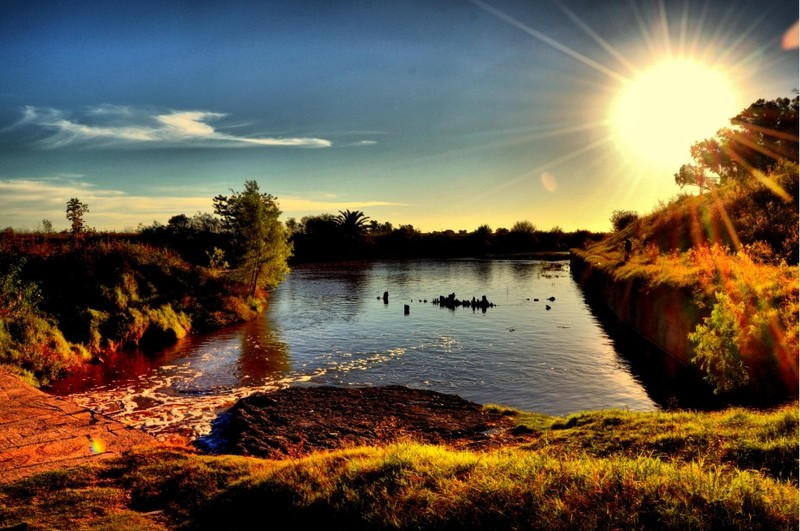

¡Bienvenidos a nuestra página!
Asociacion Civil FODIEM te invita a recorrerla y enterarte de nuestras novedades
fodiem
Foro de Ideas Emilianas

La Asociación Civil Fodiem fue creada en el año 2004 por un grupo de vecinos emilianos que sintieron la necesidad de unirse con el fin fundamental de gestionar y concretar la realización de una obra hídrica que sirviera de protección frente a las continuas inundaciones sufridas por el pueblo de La Emilia. Si bien ese fue el motor inicial, nuestra Asociación Civil se planteó además, al momento de concretar su creación diferentes objetivos que sirvieran como mejoras y beneficios para toda la población, tanto en el área cultural, social y ambiental.